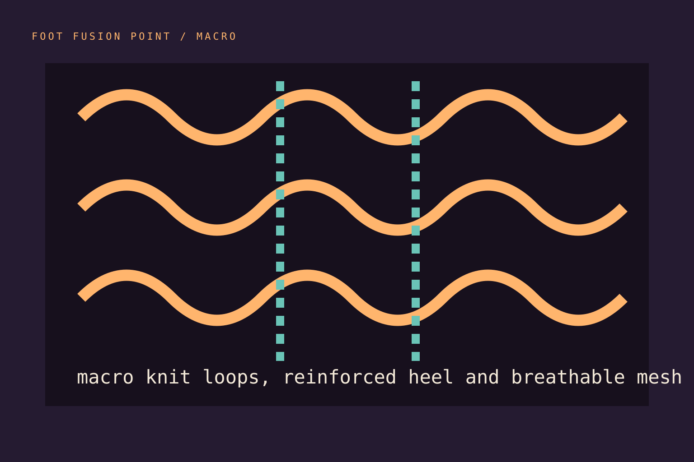

Stretch recovery
Does the knit return without gripping harder after hours of wear?
TEXTILE LAB / METHOD
A sock works inside a system: skin, movement, shoe volume, climate, washing and time.

Does the knit return without gripping harder after hours of wear?
Where does dampness move, and how quickly does the surface feel dry?
Do heel, toe and forefoot zones protect without creating bulk?
THE FOUR-PASS METHOD